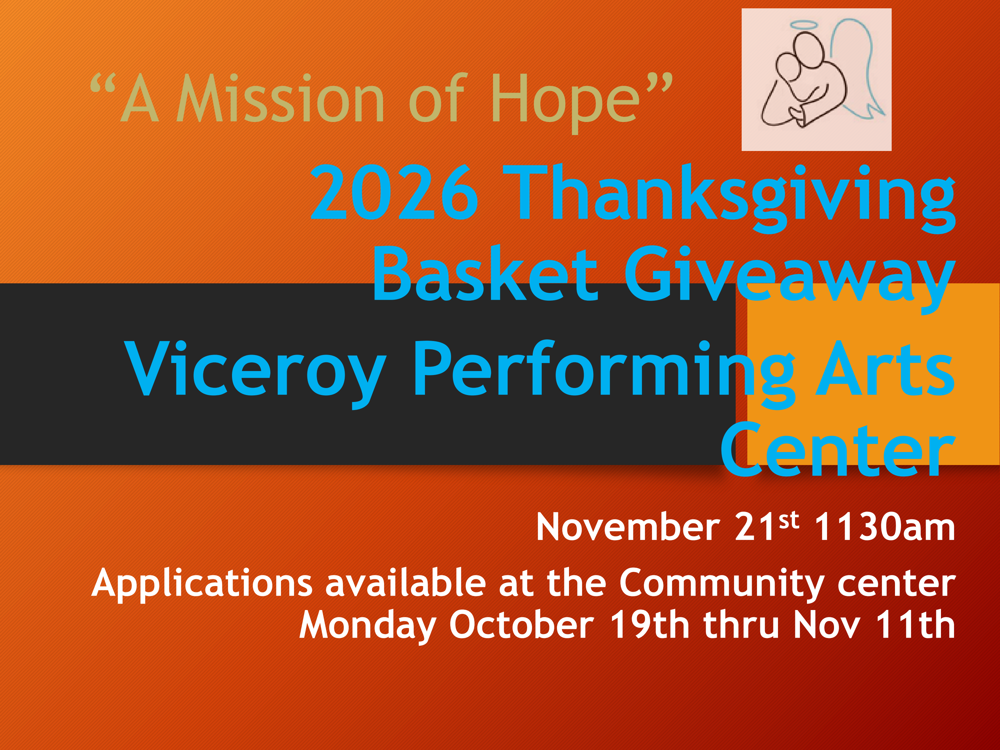
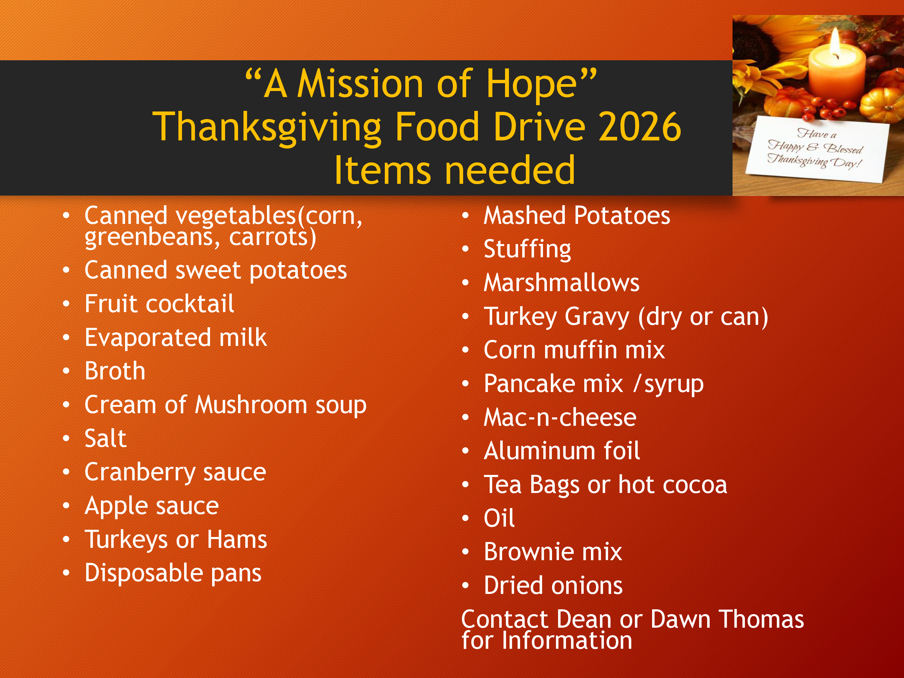

2026 Thanksgiving Basket Giveaway & Food Drive
Featured Seasonal OutreachEach Thanksgiving season, "A Mission of Hope" gathers non-perishable food items and holiday essentials to bless local families with complete Thanksgiving food baskets.

Basket Giveaway Details
📍 Viceroy Performing Arts Center — November 21st @ 11:30 AM
📄 Applications available at Community Center Oct 19 – Nov 11.

Food Drive Needed Items
Canned veggies, sweet potatoes, turkeys/hams, stuffing, gravy, baking mixes, disposable pans & more.
Immediate Non-Perishable Collection List:
Contact Dean or Dawn Thomas for info or drop-off coordination.
Outreach Leadership
Dean & Dawn ThomasWith constant branches of outreach activity running, volunteers are always needed to drop off supply donations, prep lunches, or help distribute packs.
Connect to VolunteerAnnual Backpack Giveaway
In Memory of Helen J. Stanfill
Equipping students for the school year with free new backpacks, school supplies, lunch, and clothing support.
📅 Friday, August 7th @ 11:30 AM
📍 Oak Grove Community Center Parking Lot
Supply Drive Collection Items:
Kindergarten Pencils, Glue Sticks/Liquid, Paint Sets, Binders, Composition Notebooks, Tissues, Markers, Colored Pencils, Crayons, Highlighters, Looseleaf Paper, Graphing Paper & Pens.
Food Security & Pantry Services
Monthly DistributionsTwo dedicated monthly distribution windows in partnership with regional networks:
Feeding America Distribution
Mass food distribution providing fresh produce & grocery staples.
📅 2nd Tuesday of each month
Elisha's Closet Pantry
Community resource pantry supplying emergency food packages & clothing.
📅 3rd Friday of each month
Ron Brown Memorial Lunch Program
Summer OutreachProviding regular weekday meals for local youth at the Oak Grove Community Center (11:30 AM – 12:30 PM).
Needed Lunch Donations:
Bottled Water, Flavor Packets, Vienna Sausages, Granola Bars, Chips, Crackers, Fruit Snacks, Applesauce Cups, Napkins & Spoons.